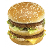

自宅から東京都町田市小山ヶ丘にあるマクドナルドへ向かう最中、「くすり」と斜めに書かれた看板は交差点の角にある大型スーパーの入り口左上に設置されている。
その大型スーパーから出てきたビニール袋を手にぶら下げる主婦が歩いている多摩境駅へ続く歩道の先にはマクドナルドがある。
多摩境駅からマクドナルドまでの間は徒歩5分ほどで、ペットショップ、学習塾、ファミリーマート、マンション、児童会館の5つが挟まっている。
主婦は大型スーパーからマンションまでを歩き、エントランスに立つと自動ドアが開いた。
マクドナルドのメニュー表に貼られたビッグマックの写真は、肉、レタス、パン、肉、チーズ、レタスが二つのパンで挟まれている。
ヘルメットとウィンドブレーカーを着用した従業員は、四角いバッグに入った商品を配達するために四角いバッグを背負って専用のバイクへ跨った。
ハンドルを捻るとエンジンがかかるバイクのハンドルを捻り、エンジンをつける。
東京都町田市小山ヶ丘のどこかにある住所を目標に従業員が乗ったバイクは走り出した。
走り出したバイクが自宅に到着するには、ペットショップ、学習塾、ファミリーマート、マンション、児童会館を通りすぎて、大型スーパーに接する十字路を越えていく必要がある。